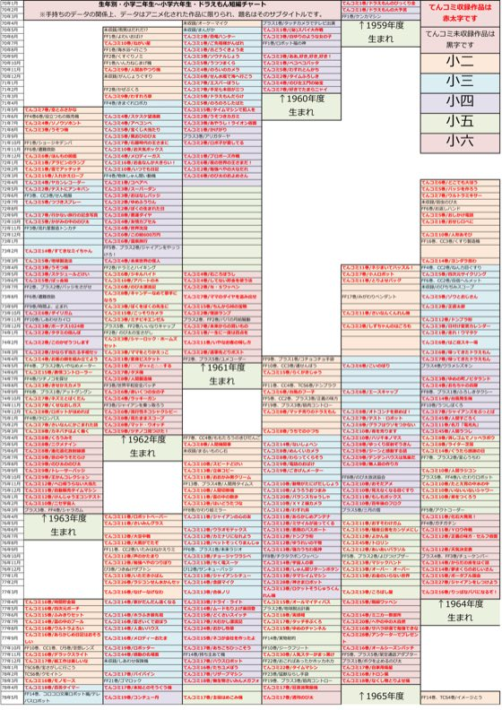
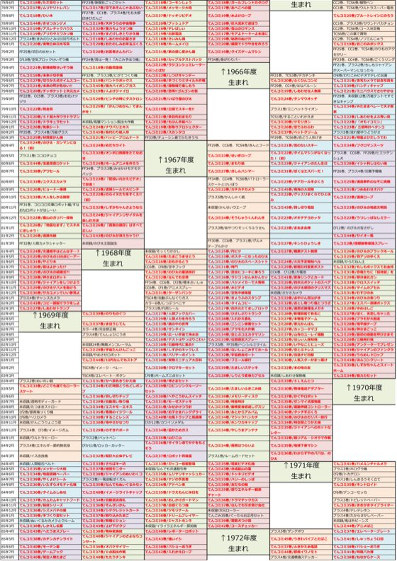
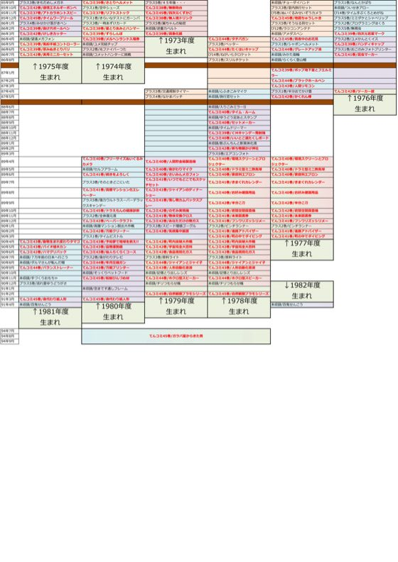

TOP / Doraemon Material
下の画像は通信量に配慮した縮小版です。細かい文字まで読むには、各画像をタップして原寸PNGを開くか、上のPDF版(332KBと軽く、拡大しても鮮明なのでおすすめ)をどうぞ。

1/3枚目 (1970〜1978年)
2/3枚目 (1978〜1985年)
3/3枚目 (1985〜1994年)2015年頃作成。手持ちのデータの関係上、アニメ化された作品に限られ、題名はそのサブタイトルです。てんコミ収録作品は赤太字にしています(単行本としてメジャーなため)。